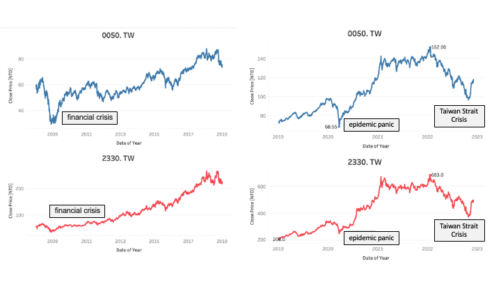

See the industry structure from stock 0050.TW

If you are an investor in the Taiwan stock market, you are likely familiar with the Yuanta 0050 ETF(0050.TW). As one of the largest index funds in Taiwan, it tracks the Taiwan 50 Index, which can be simply considered as a number allocated proportionally according to the market value of top 50 companies by market capitalization in Taiwan. The list or proportion of the portfolio will be adjusted on a rolling basis based on changes in the market value of these companies. Therefore, we can grasp the approximate industry distribution and mainstream companies in Taiwan from the portfolio composition of 0050. Overall, 0050.TW can be regarded as S&P500 of Taiwan version with 50 companies only.
In this project, I first used Python to retrieve the historical portfolio composition of the Yuanta 0050 ETF from the Taiwan Stock Exchange’s Market Observation Post System (https://mops.twse.com.tw/mops/web/t78sb04_q2). Then, I used Tableau to visualize and analyze the changes in Taiwan’s industry distribution and mainstream companies over time.
Regarding the part of web scraping, I have uploaded the code to my Github: https://github.com/usausagichan/data-mining-for-0050.Tw-. Interested friends can refer to it for learning purposes.
In the following article, I will present the visualized results of this data using Tableau (https://public.tableau.com/app/profile/ctchen/viz/IndustryAnalysis_16698030444010/Dashboard1 for the complete dashboard), and provide some analysis.
Data from Taiwan Stock Exchange’s Market Observation Post System

The captured data is shown in the following table, which includes the stock name(股票名稱), industry category(產業類別), and shareholding ratio(持股比率). The column “持股比率” represents the proportion of a single company’s stock holdings, and “持股比率.1” represents the proportion of the industry category.

The following is the visualization of the shareholding ratios of each industry and company in the third quarter of this year for the E Fund 50 (0050.TW):
Extracting mainstream Taiwanese companies and industries from the word cloud and treemap:
Figure 1

The sizes and shades of the Treemap and word cloud represent the percentage of each industry and company in the holdings of the Yuanta 0050 ETF, which roughly reflects the market value of each major company and industry in the Taiwan stock market. From Figure 1 we could see that in 2022, the semiconductor industry is the largest sector in Taiwan, followed by the financial and insurance industry, which accounts for about 53.79% and 15.86% of the Yuanta 0050 holdings, respectively, with a difference of more than 3.39 times. Other tech industries such as electronics, telecommunications, electronic components, computers and peripherals, optoelectronics, as well as traditional industries such as steel, food, and cement are also included. TSMC is the largest company in terms of market value, and even Hon Hai, the second-largest, is far behind.
Figure 2

Focusing on the semiconductor industry (left side of Figure 2), we can also see that TSMC overwhelmingly dominates, with a share almost 12.37 times that of the second-place MediaTek. On the other hand, the second-ranked financial and insurance industry is evenly distributed (right side of Figure 2), with the top five companies accounting for about 1.64% to 1.47% of the portfolio. In fact, the ranking of these companies’ shareholdings in the 0050.TW may vary each quarter, and their shareholdings do not exactly reflect their market capitalization. This is because the calculation of the TAIEX 0050 also takes into account the public float of individual stocks, and besides, the market capitalization of these companies is not significantly different. As the result, public float may seriously affect their ranking in the 0050.TW portfolio.
In summary, Taiwan’s industries are heavily focused on the semiconductor and electronics-related technology industries, as well as the finance and insurance industry. However, the employment requirement for these industries is higher than other industries, particularly in the case of the semiconductor industry, which is dominated by TSMC. This make the number of people employed by companies that can access these large resources limited. According to a 2021 report by the Commercial Times[1], employment in the Taiwan IC semiconductor industry is only about 7%, and TSMC employees accounted for just over 60,000 people in the previous year. Furthermore, seven to eight percent of people work in traditional industries. In other words, the population working for these large companies we see in Taiwan is a minority, and those who benefit from high salaries provided by these large market cap companies are also a minority. This may lead to a wealth gap, and the situation and salaries received by most people may not be reflected in Taiwan’s economic indicator, the Taiex 0050. In addition, in an economy that heavily relies on industries with high electricity demands such as TSMC and the electronics industry, a shortage of electricity in the future could cause serious economic problems.
The relationship between stock price of TSMC and 0050.TW
Figure 3

In essence, the existence of an investment portfolio is to hedge against risks, and this applies to ETF as well. However, is it really okay for the 0050.TW to have nearly half of its funds invested in TSMC given the situation where TSMC is dominating the market? Looking at the historical closing price data for 0050.TW and TSMC (2330.TW) this year (Figure 3), we can see that their trends are almost identical, indicating that TSMC’s ups and downs determine the performance of 0050.TW. Judging from the proportion of the investment portfolio, even if Hon Hai, the second-largest market capitalization holding with a 5.42% share, rises by 8.33%, its impact on 0050.TW’s return rate is only equal to that of TSMC’s 1% increase, let alone other stocks with smaller proportions.
Figure 4

In fact, among all fifty stocks, only four have a shareholding ratio of more than 2% - TSMC, Hon Hai, MediaTek, and Delta Electronics (Figure 4 left); and only twenty-two stocks have a shareholding ratio of more than 1% (Figure 4 right). That is to say, about half of the stocks in the 0050.TW investment portfolio have a proportion of less than 1%, and their influence can be described as negligible compared to TSMC’s.
Figure 5 0050.TW in 2008 and 2019

Therefore, from the perspective of diversified investment, buying the 0050.TW may not be a good choice. Since its listing in 2003, Taiwan Semiconductor Manufacturing Company (TSMC) has almost always been the largest holding in the portfolio, with a stable percentage range of 10-20%, until the fourth quarter of 2012 when its percentage started to exceed 20%. In the following years, TSMC’s percentage continued to increase, reaching about 40% by the end of Q4 2019, when its stock price hit a new high of 331 Taiwan dollars, up from 219.5 Taiwan dollars at the beginning of the year. If we look at the sector distribution in 2008 (Figure 5, left) and 2019 (Figure 5, right), we can see that TSMC’s percentage in the Taiwan index has increased significantly over the past decade, and has led to a further concentration of Taiwan’s industry in the semiconductor sector.
In 2020, TSMC announced the mass production of its 5-nanometer process, which led to a significant influx of funds. In the third quarter of that year, the holding of TSMC by the ETF reached 48%, an increase of about 8% from the previous quarter, reflecting a significant increase in market capitalization in a short period of time. Looking at the stock price alone, from the stock market crash due to the COVID-19 panic in March 2020 to January of the following year, TSMC’s stock price rose from NT$248 to NT$673, a whopping 2.71 times increase. However, since the beginning of this year (2022), TSMC’s stock price has been declining along with the rising US interest rates. To make matters worse, after Pelosi’s visit to Taiwan in August of this year, geopolitical risks have increased, and in the midst of foreign investors’ rush to withdraw their investments, the stock price continued to fall until recently when it showed signs of stabilizing and rebounding.
Figure 6 0050.TW and TSMC’s stock price in 2019-2022 and 2008-2019

We can compare the historical prices of TSMC and the 0050.TW from early 2008 to the end of 2018 (left chart in Figure 6) and from early 2019 to the end of 2020 (right chart in Figure 6). It is clear that the price trends of TSMC and the 0050.TW Taiwan Top 50 ETF in the three years from 2019 to 2022 are closer to each other than in the previous ten years before 2018. On the one hand, this is because TSMC’s market value began to increase significantly in 2019, thereby increasing its shareholding proportion and making its influence on the 0050.TW Taiwan Top 50 ETF stronger. On the other hand, as TSMC is Taiwan’s largest stock and has almost become an industry leader in the past three years, it is bound to attract investors’ attention from all over the world. With large amounts of funds flowing in and out of the stock, the volatility of TSMC is inevitable, which in turn affects the 0050.TW. Under these two factors combined, the price trend of the 0050.TW is largely determined by TSMC, hence the joke that buying 0050.TW is equivalent to buying TSMC.
Conclusion
Visualizing the holdings of the Yuanta Taiwan 50 ETF, we can first see that Taiwan’s industry funds are heavily concentrated in the semiconductor, financial, and electronics sectors, with TSMC dominating the semiconductor industry. From these conclusions, we can observe the potential wealth gap in Taiwan’s job market and the high dependence of Taiwan’s economy on electricity. Moreover, with nearly half of the Yuanta Taiwan 50 ETF’s holdings concentrated in TSMC, this not only reflects Taiwan’s economy’s high dependence on TSMC but also limits the fund’s hedging ability. If TSMC were to experience a massive decline in a short period, and the fund were unable to adjust its holdings quickly enough to minimize losses, it would undoubtedly be a disaster for those holding the fund. Therefore, those holding this stock should pay close attention to TSMC’s profitability and company condition to truly avoid risk, which may not meet the expectations of many who expect “brain-free investing” from ETFs.